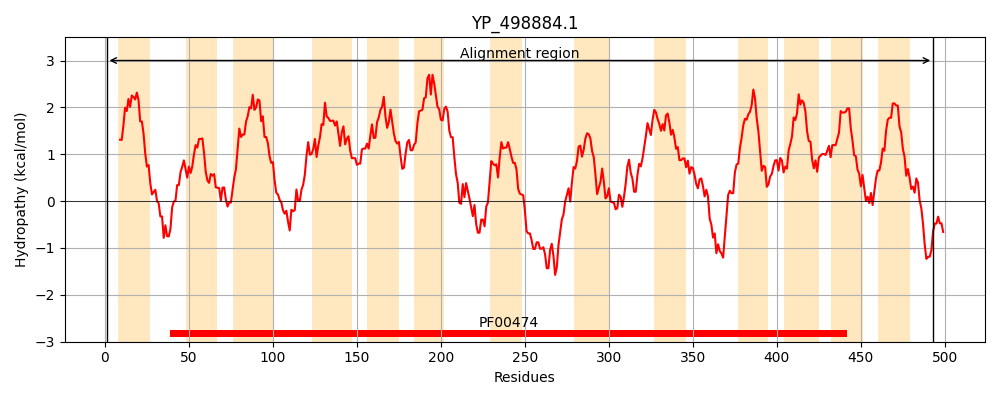
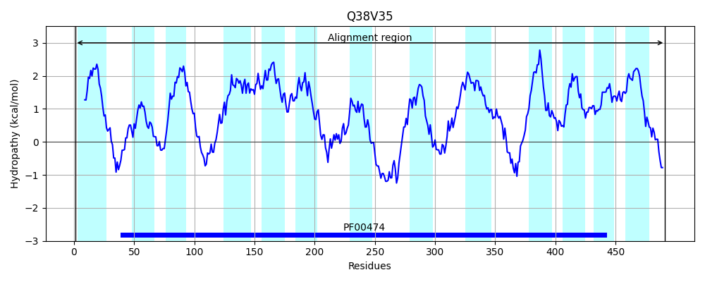
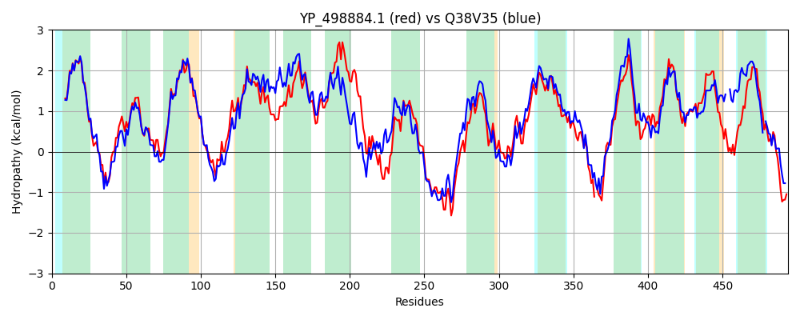

Hit Accession: Q38V35
Hit TCID: 2.A.21.3.20
Hit Description: gnl|BL_ORD_ID|13429 gnl|TC-DB|Q38V35|2.A.21.3.20 Putative Solute:Na(+) symporter OS=Lactobacillus sakei subsp. sakei (strain 23K) GN=LCA_1642 PE=3 SV=1
Mach Len: 494
e:0.000000
Query TMS Count : 13
Hit TMS Count: 13
TMS-Overlap Score: 12.800000
Predicted Substrates:CHEBI:45744;N-acetyl-beta-neuraminic acid
BLAST Alignment:
Score: 1557 , Bit scores: 604 bits, E-value: 0.0e+00, Alignment length: 494, Percentage identity: 59
Query: 1 MKEVGFGTLNWVAVIIYLLAMLFIGVYFTKRASQSTNSFFTASGRLPSWVVGFSIYATTLSAITFMSTPEKAFLTDWSYIAGNIAIVAIIPLLIYFYVPFFKKLKVTSAYEYLEARFGPSIRVIGSLLFVVYHLGRVAIVIYLPTLAITSVSDMNPYIVASLVGLLCILYTFLGGFEGVVWSDFIQGVILLGGALVIIILGVVNIKGGFGTVFADAIEHKKLISADNWKLNTAAAAIPIIFLGNIFNNLYQYTASQDVVQRYQASDSLKETNKSLWTNGILALISAPLFYGMGTMLYSFYTHEAVLPKGFNTSSVVPYFILTEMPPFVAGLLIAAIFAAAQSTISSSLNSISACISIDIKQRFFG-KGSERHEVNFARFIIIIAGIFGFGMSLYLIASNSNDLWDLFLFVTGLFGVPLAGVFAVGIFTKRTNTFGVICGLILGIIFAYVYNGVGKGNSPFYVSTISFTVAFVFAYILSFIVPSKHKKDITGLTI 493
M+++GFGT NW+ + +YLLAML +GVYFTK+AS+ST++FF A G++P+W GFSIYATTLSAITFMSTPE+AFL DWSY G++AI+ +IP+LI FYVPFF+KL VT+AYEYLE RF P +R++GS+LF++YH+GRVAIVIYLP LA+TSV+D+NP ++A +VG LCI+YTFLGG EGV+WSD IQG++LLGGAL++ +LG IKGG+GTVF DA+ K+IS ++ + + IP+IF G FN LYQYT SQDV+QRYQ + ++KET KSLWTNG+LA+I+ P+FYGMGT+LYSFY+ LPKGFNT+++VPYFI+ +P +AGL+IAAIFAAAQST++SSLN+IS+C D K RFF K + +V +AR IIII+G+ +++YL+ S+ + DLF+ +TG+FGVPLAG+FAVGIFTKR N G + GLI + Y SPF VS +SF AFV +Y++S +V K KDITGLT+
Sbjct: 1 MQKIGFGTFNWIVLCVYLLAMLLVGVYFTKKASKSTDAFFKAEGKIPAWAAGFSIYATTLSAITFMSTPEQAFLQDWSYSVGSLAIIILIPILIKFYVPFFRKLSVTTAYEYLEHRFNPLMRIVGSILFMLYHIGRVAIVIYLPILAVTSVTDINPVLIAVIVGGLCIIYTFLGGIEGVIWSDVIQGILLLGGALLVSMLGAHYIKGGWGTVFNDAMADHKIISGLDFNASVLSRFIPLIFAGQFFNTLYQYTGSQDVIQRYQTTSTMKETVKSLWTNGLLAIITVPIFYGMGTVLYSFYSRAESLPKGFNTTALVPYFIIKTLPAGIAGLVIAAIFAAAQSTVASSLNAISSCAIADFKVRFFNDKFKQYSDVTWARVIIIISGLISLAVAIYLMLSDQSKTLDLFMTITGIFGVPLAGIFAVGIFTKRANATGALIGLIASAVLTYFAQMA--SISPFVVSCVSFISAFVISYLVS-LVFKKSNKDITGLTV 491 | Protein Hydropathy Plots: |
|---|
|  |  |
Pairwise Alignment-Hydropathy Plot:
|
|---|
|  |